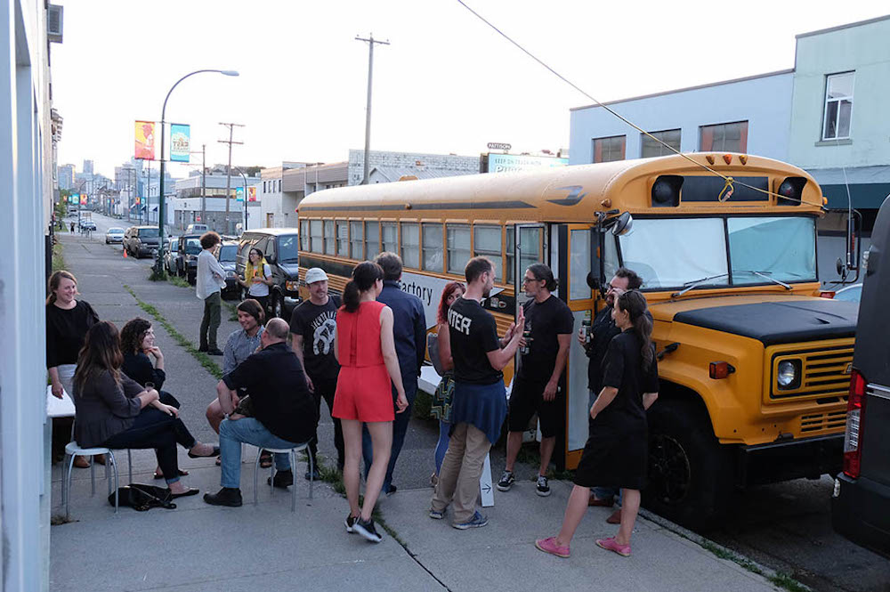
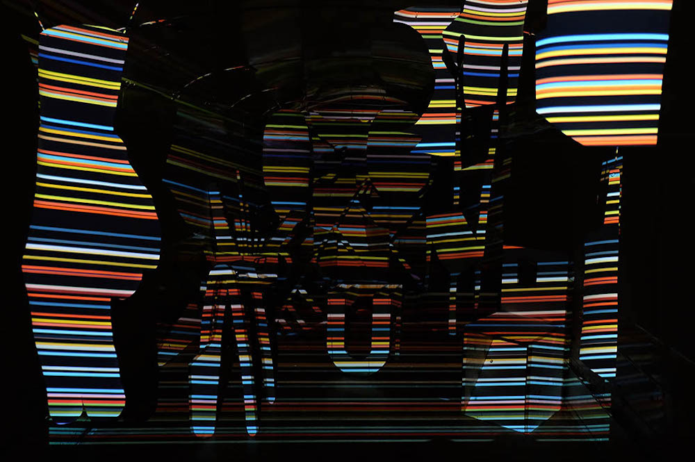
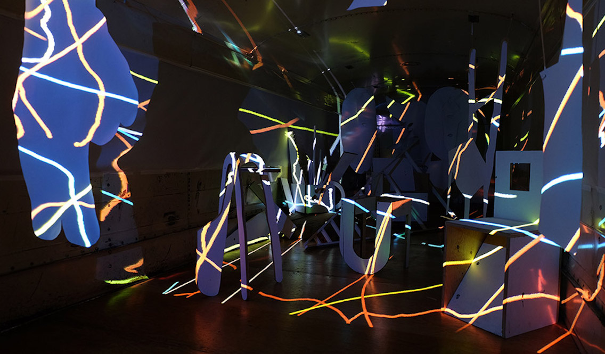
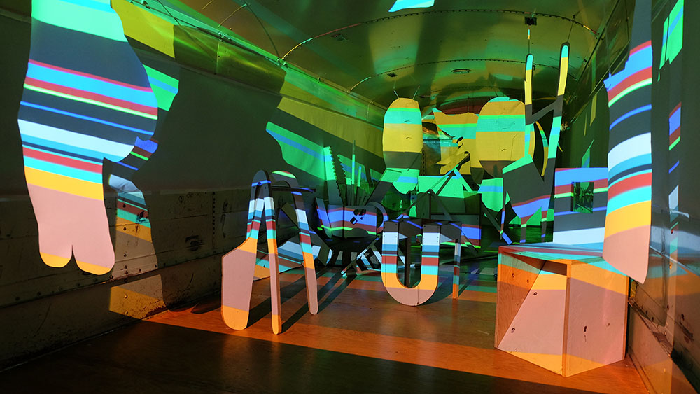
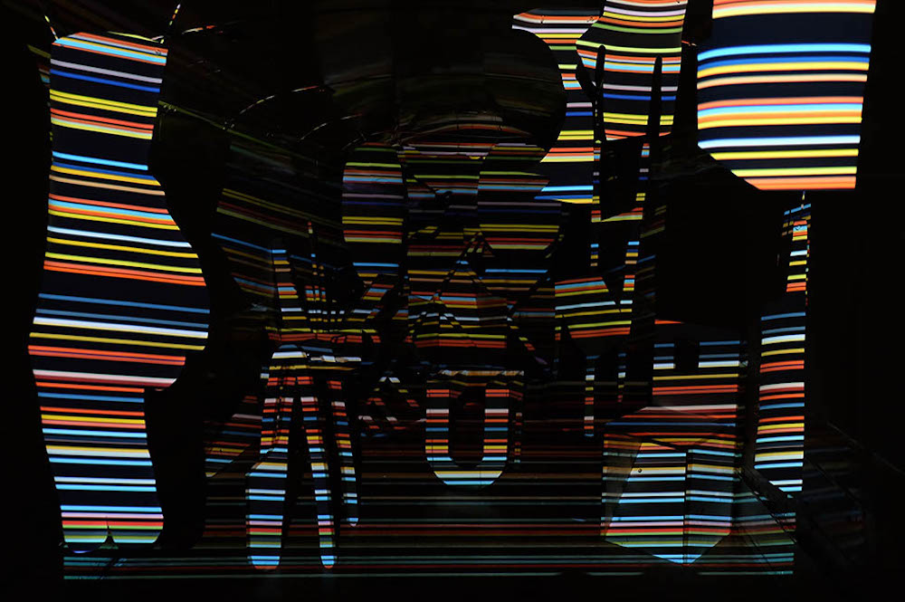
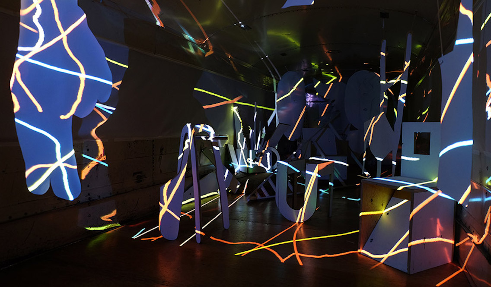
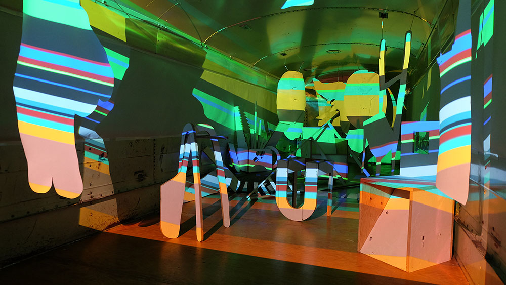
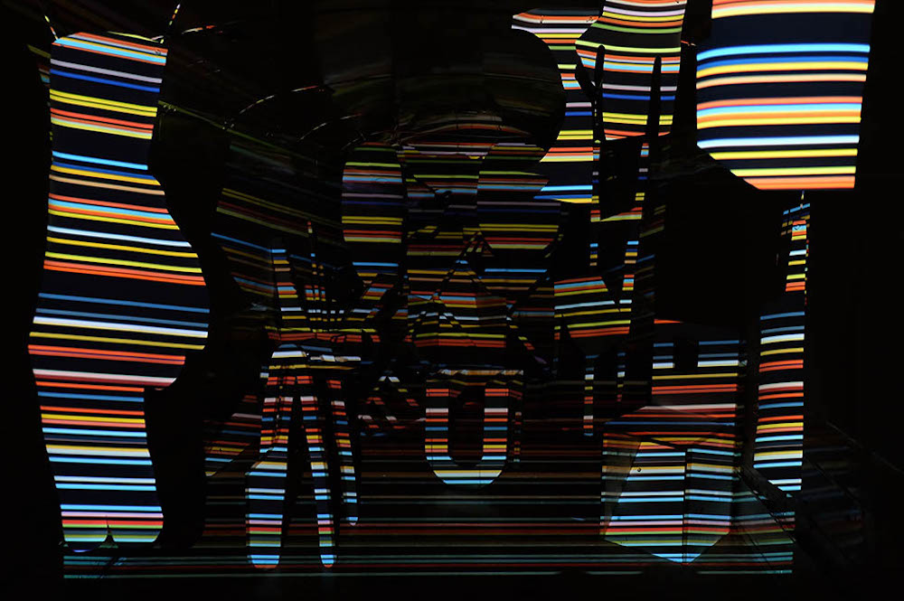
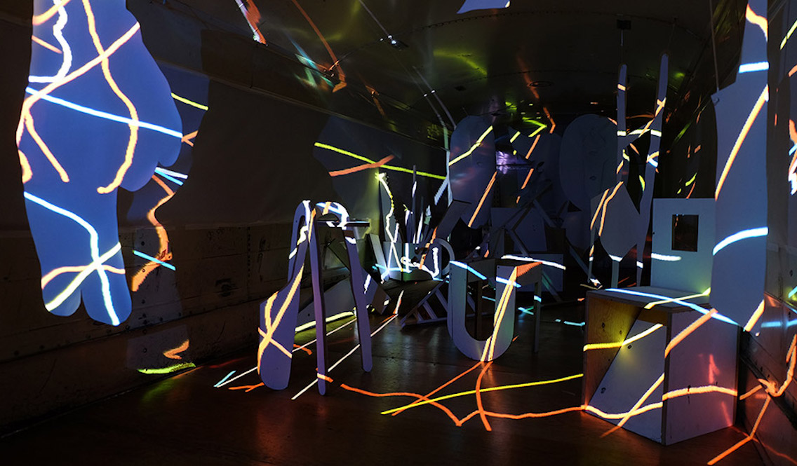
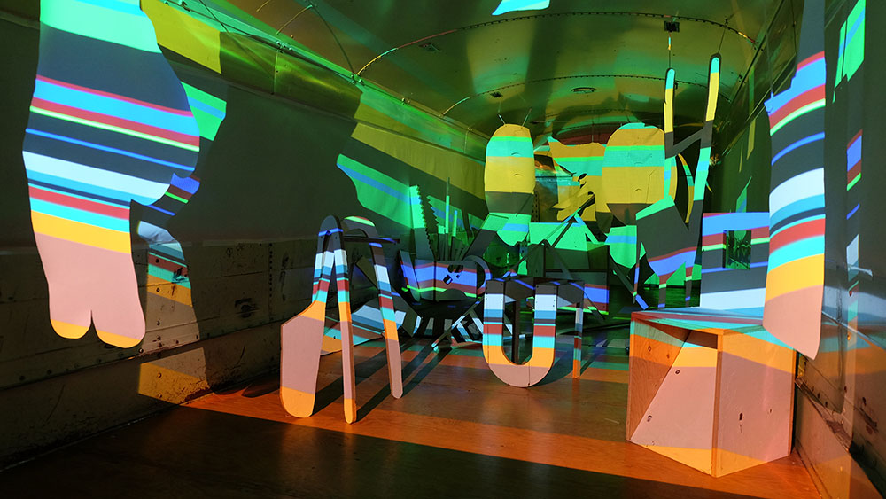

 









Inside Out
Collaborative Exhibition with M.E. Sparks
June 16-19, 2018 @SiteFactory
1600 Block - Franklin Street, Vancouver, British Columbia
Looking at the artist studio as a historical trope, Inside Out explored the nature of these mysterious spaces within the contemporary
moment of increasingly dematerialized artistic practice and high rental costs in the city of Vancouver.
The show featured a programmed animation which was projected digitally onto a collection of whitewashed furniture,
canvas cutouts, and found debris. This project also explored the relationship between digital projection and painting,
flattening the assembly of objects into a semi-two-dimensional image through a series of algorithmically animated colour studies.
Exhibition Text:
Cover /
Inside
Press:
Vancouver Sun